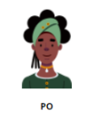

Papéis

Product Owner é responsável por trabalhar com gerenciamento do produto, decidir a ordem de prioridade dos requisitos e esclarecer as dúvidas da equipe sobre os requisitos, o PO é o dono do produto.
Product Owner é responsável por trabalhar com gerenciamento do produto, decidir a ordem de prioridade dos requisitos e esclarecer as dúvidas da equipe sobre os requisitos, o PO é o dono do produto.
Scrum Master (Gerente da Fábrica) é responsável pelo gerenciamento da Fábrica e tem o papel de facilitar e incentivar a equipe na tomada de decisões, ajudando a resolver problemas e fazer melhorias na produtividade da equipe, com o objetivo de ter uma equipe auto-organizável.

A Equipe de desenvolvimento da Fábrica é composta por dois membros responsáveis por desenvolver o produto/resolver bugs, são uma equipe multifuncional com um conjunto de habilidades diferentes, com o objetivo de produzir algo funcionando com qualidade no final de cada Sprint.
<< Voltar